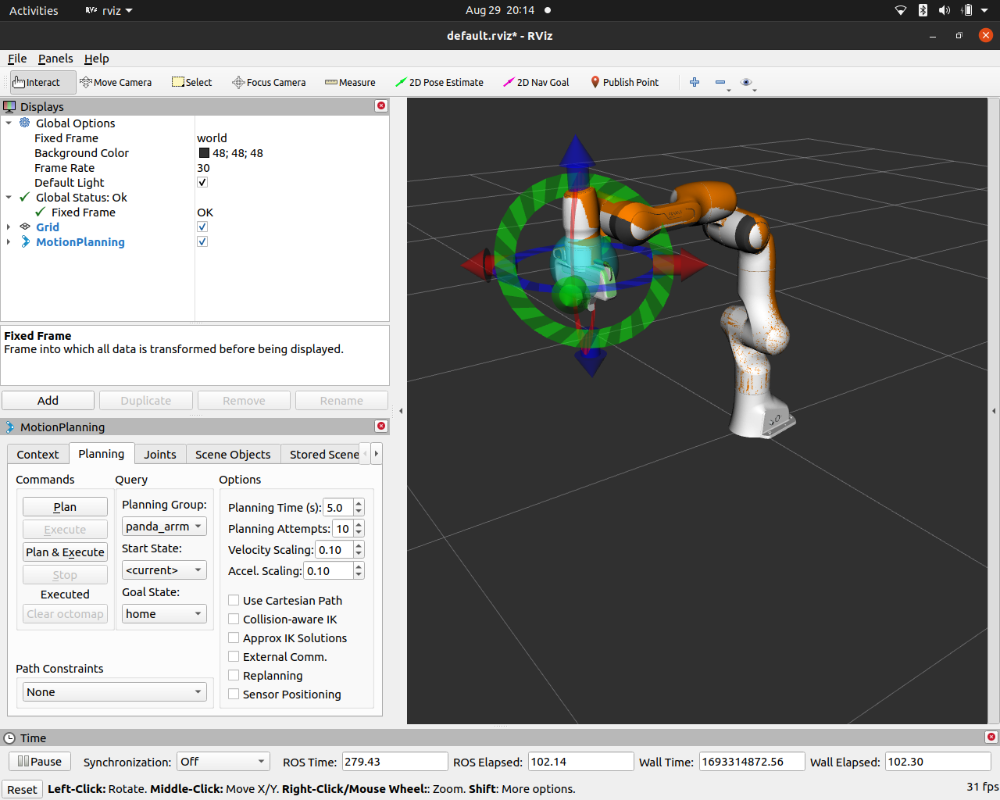
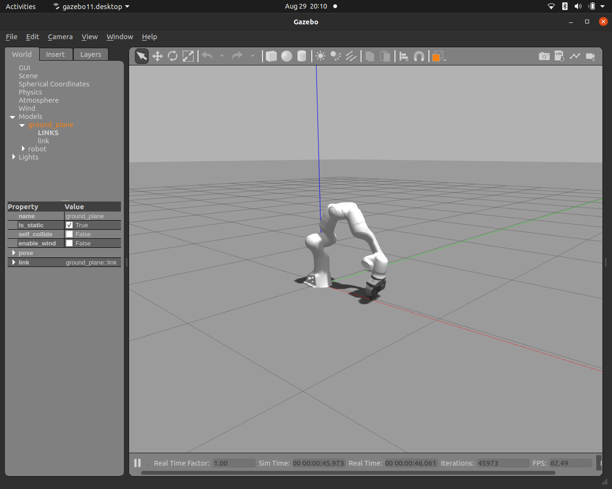
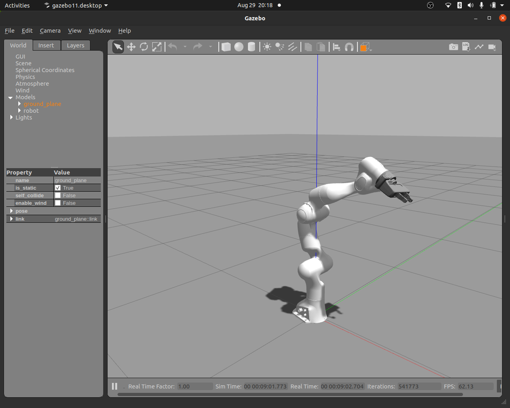
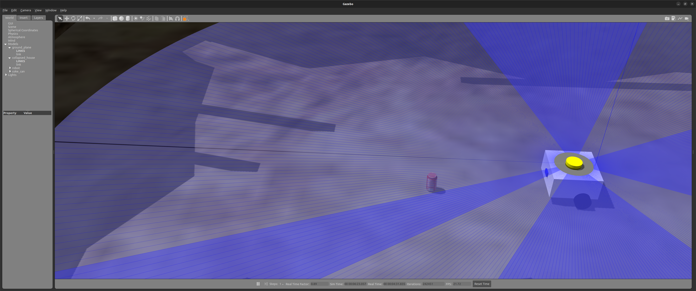
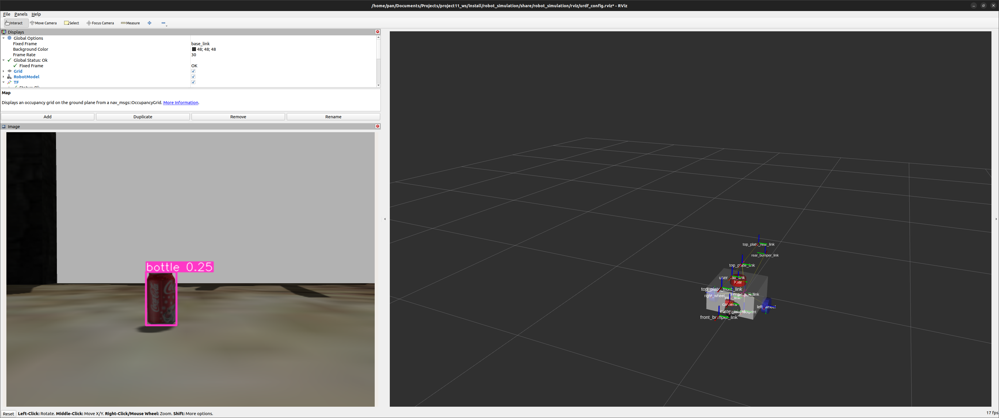
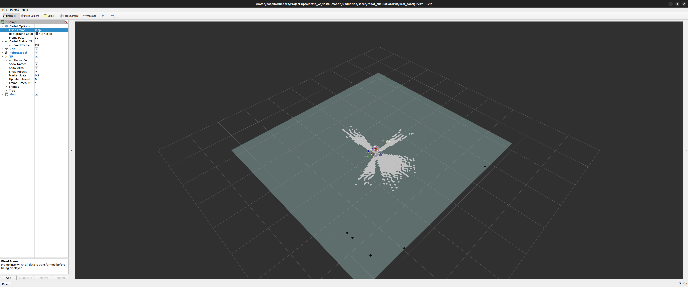
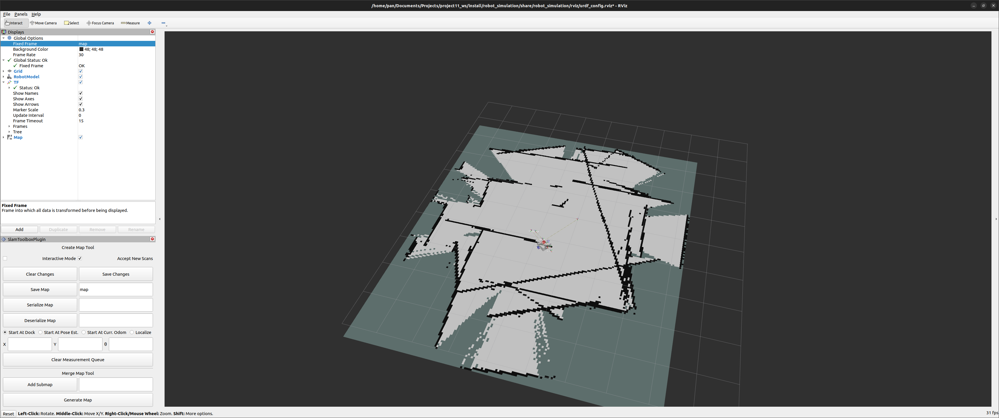
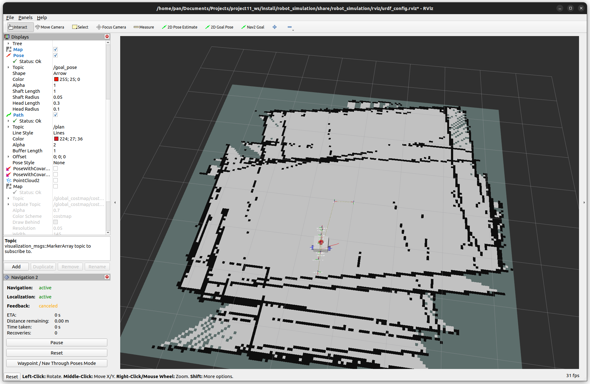
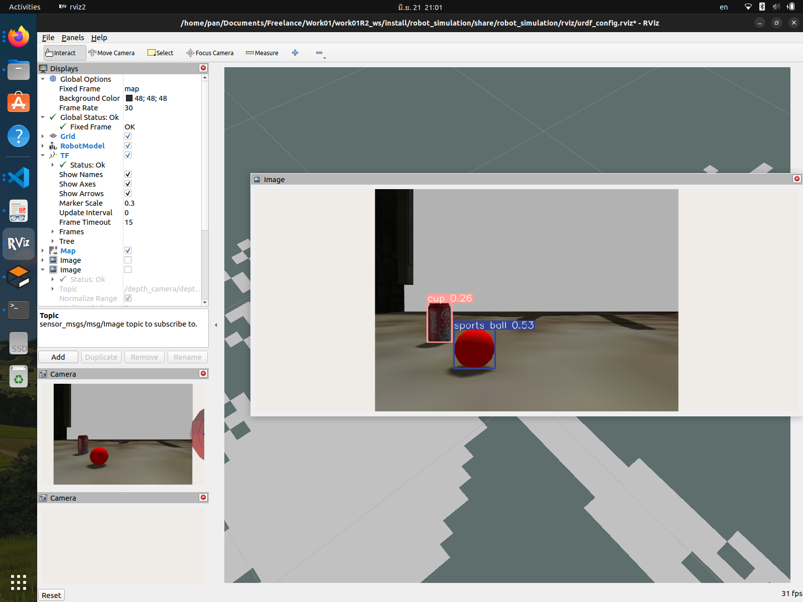
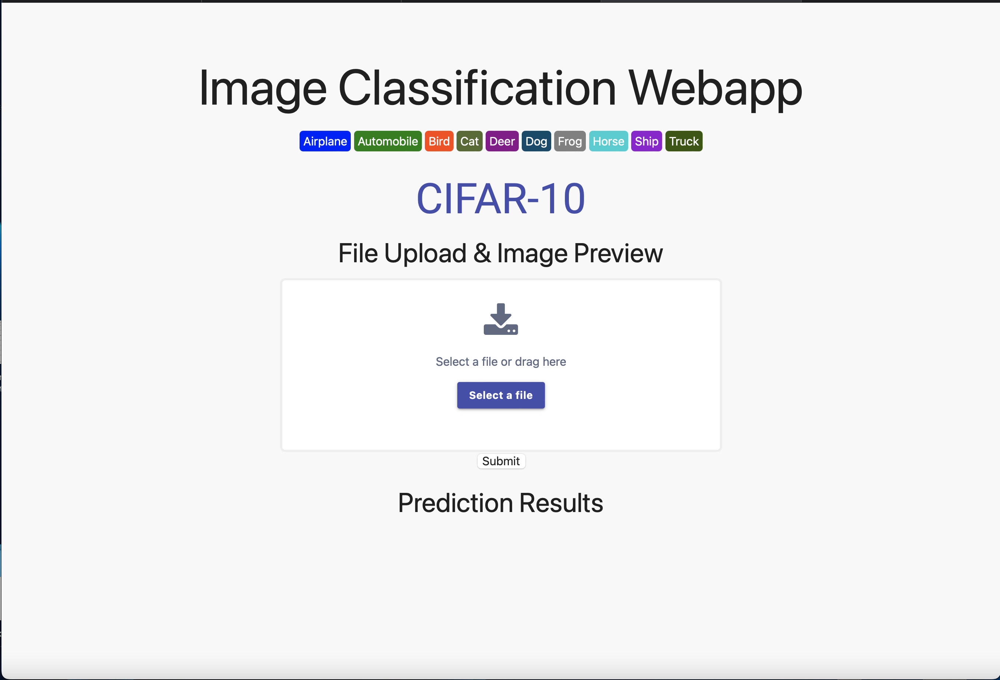

My Projects
Panda Arm
Highlighting my expertise as a Robotic Software Engineer, the Simulated Panda Arm project combines ROS, MoveIt, and Gazebo to showcase advanced robotic manipulation. With ROS integration, the virtual Panda Arm's seven joints come to life, displaying my software control prowess. MoveIt empowers the arm with intelligent motion planning. This project emphasizes realistic manipulation, algorithm testing, and collision avoidance within a customizable Gazebo simulation. Tailored for my portfolio, it signifies my commitment to cutting-edge robotics, innovation, and software engineering excellence—a testament to my capabilities in bridging simulation and practical implementation.
  YOLOv8+SLAM Mobile Robot
Description 2
     Med Slip OCR Project
Med Slip OCR is an AI-powered project developed during the Super AI Engineer Internship at Botnoi. The project uses object detection and OCR techniques to read numbers from medical slips, making the process faster, more accurate, and less prone to human error. The web application developed using Streamlit is user-friendly and provides an accessible interface for users to upload one or more images of medical slips and get the output in real-time.
 Link
Link
Med Object Detection: Drink or Dose
Using AI to detect an object in the video and recognize the object whether ti is drink or dose.
- Data Format: Video.mp4
- Tool for labeling: Roboflow
- Number of Classes: 2, Drink and Dose
 Link
Link
Image Classification Webapp
The Image Classification Webapp is an AI-powered project that uses deep learning to classify an image. Developed using the CIFAR10 dataset and Flask, the project provides a user-friendly interface for users to upload an image and get the output as text, indicating the category of the image.
 LinkSpace Titanic Streamlit
Space Titanic Streamlit uses machine learning to predict if the Titanic's passengers were transported to an alternate dimension. The project includes a Jupyter Notebook and a Streamlit web app for user interaction.
Link
Bonsai Image app with Streamlit
The Bonsai Image app with Streamlit is an AI-powered project that uses deep learning to predict the type of bonsai tree in an image. Developed using PyTorch and Streamlit, the project provides a user-friendly interface for users to upload an image of a bonsai tree and get the output as text, indicating the type of bonsai tree in the image.
Link

Speech Recognition Socketio
This project is about building a socket.io server for receiving the .wav file path send by a client. The server then uses an AI model to do speech recognition. Then the server send back the result to the client.
Link